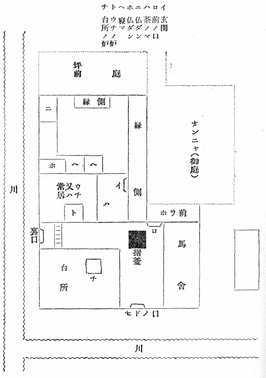

この話はすべて遠野の人佐々木鏡石君より聞きたり。昨明治四十二年の二月頃より始めて夜分をりをり訪ね来たり、この話をせられしを筆記せしなり。鏡石君は話上手にはあらざれども誠実なる人なり。自分もまた一字一句をも加減せず感じたるままを書きたり。思ふに遠野郷にはこの類の物語なほ数百件あるならん。われわれはより多くを聞かんことを切望す。国内の山村にして遠野よりさらに物深き所には、また無数の山神山人の伝説あるべし。願はくはこれを語りて平地人を
戦慄せしめよ。この書のごときは
陳勝呉広のみ。
昨年八月の末自分は遠野郷に遊びたり。花巻より十余里の路上には
町場三か所あり。その他はただ青き山と原野なり。人煙の
稀少なること北海道石狩の平野よりもはなはだし。あるいは新道なるがゆゑに民居の来たりつける者少なきか。遠野の城下はすなはち煙花の街なり。馬を駅亭の主人に借りて
独り郊外の村々を巡りたり。その馬は
黔き海草をもちて作りたる
厚総を掛けたり。虻多きためなり。猿が石の渓谷は土肥えてよく
拓けたり。路傍に石塔の多きこと諸国その比を知らず。高処より展望すれば早稲まさに熟し、晩稲は花盛りにて水はことごとく落ちて川にあり。稲の色合ひは種類によりてさまざまなり。三つ四つ五つの田を続けて稲の色の同じきは、すなはち一家に属する田にして、いはゆる
名処の同じきなるべし。
小字よりさらに小さき区域の地名は、持主にあらざればこれを知らず。古き売買譲与の証文には常に見ゆるところなり。
附馬牛の谷へ越ゆれば
早池峰の山は淡く霞み、山の形は菅笠のごとく、また片かなのへの字に似たり。この谷は稲熟することさらに遅く満目一色に青し。細き田中の道を行けば名を知らぬ鳥ありて
雛を連れて横ぎりたり。雛の色は黒に白き羽まじりたり。始めは小さき鶏かと思ひしが、溝の草に隠れて見えざればすなはち野鳥なることを知れり。天神の山には祭りありて獅子踊りあり。ここにのみは軽く
塵たち、紅き物いささかひらめきて一村の緑に映じたり。獅子踊りといふは鹿の舞ひなり。鹿の角をつけたる面をかぶり童子五、六人剣を抜きてこれと共に舞ふなり。笛の調子高く歌は低くして側にあれども聞きがたし。日は傾きて風吹き酔ひて人呼ぶ者の声も淋しく女は笑ひ児は走れどもなほ旅愁を
奈何ともするあたはざりき。
盂蘭盆に新しき仏ある家は、紅白の旗を高く揚げて魂を招く風あり。峠の馬上において東西を指点するに、この旗十数か所あり。村人の永住の地を去らんとする者と、かりそめに入り込みたる旅人と、またかの悠々たる霊山とを
黄昏は徐に来たりて包容し尽くしたり。遠野郷には八か所の観音堂あり。一木をもちて作りしなり。この日
報賽の徒多く、岡の上に燈火見え伏鉦の音聞こえたり。道ちがへの叢の中には雨風祭りの藁人形あり。あたかもくたびれたる人のごとく仰臥してありたり。以上は自分が遠野郷にて得たる印象なり。
思ふにこの類の書物は少なくも現代の流行にあらず。いかに印刷が容易なればとて、こんな本を出版し自己の狭隘なる趣味をもちて他人に強ひんとするは、無作法の仕業なりといふ人あらん。されどあへて答ふ。かかる話を聞きかかる処を見て来て後、これを人に語りたがらざる者はたしてありや。そのやうな沈黙にしてかつ慎み深き人は、少なくも自分の友人の中にはあることなし。いはんやわが九百年前の先輩『今昔物語』のごときは、その当時にありてすでに今は昔の話なりしに反し、これはこれ目前の出来事なり。たとへ敬虔の意と誠実の態度とにおいては、あへて彼を凌ぐことを得と言ふあたはざらんも、人の耳を経ること多からず、人の口と筆とを倩ひたることはなはだわづかなりし点においては、彼の淡泊無邪気なる大納言殿かへつて来たり聴くに値せり。近代の
御伽百物語の徒に至りてはその志やすでに
陋かつ決してその談の
妄誕にあらざることを誓ひ得ず。ひそかにもつてこれと隣を比するを恥とせり。要するにこの書は現在の事実なり。単にこれのみをもつてするも立派なる存在理由ありと信ず。ただ鏡石子は年わづかに二十四五、自分もこれに十歳長ずるのみ。今の事業多き時代に生まれながら、問題の大小をもわきまへず、その力を用ゐる所当を失へりと言ふ人あらば如何。明神の山の
木兎のごとく、あまりにその耳を尖らしあまりにその眼を丸くしすぎたりと責むる人あらば如何。はて是非もなし。この責任のみは自分が負はねばならぬなり。
おきなさび飛ばず鳴かざるをちかたの森のふくろふ笑ふらんかも
柳田 国男
［＃改ページ］
前版の『遠野物語』には番号が打ってある。私はその第一号から順に何冊かを、話者の佐々木君に送った記憶がある。その頃友人の西洋に行っている者、またこれから出かけようとしている者が妙に多かったので、その人たちに送ろうと思って、あのような扉の文字
（注―此書を外国に在る人々に呈す）を掲げた。石黒忠篤君が船中でこの書を読んで、詳しい評をしてよこされた手紙などは、たしかまだどこかに保存してある。外国人の所蔵に属したものも、少なくとも七、八部はある。その他の三百ばかりも、ほとんど皆親族と知音とに
頒けてしまった。全くの道楽仕事で、最初から市場にお目見えをしようとはしなかったのである。
この書の真価以上に珍重せられた理由はこれだと思う。今度も同じような動機で覆刻を急ぐことになったのだが、以前にも私は写しますなどという人がおりおりはあるので、多少の増訂をして二版を出そうと思い、郷土研究社にはその予告をさせ、かつ古本商には警告を与え、佐々木君にはもっと材料があるなら送ってくるように言ってやった。同君も大いに悦び、手帖にあるだけを全部原稿紙に清書して、ある時持って来て、どさりと私の机の上に置いた。これを読んでみるとなかなか面白いが、なにぶんにも数量が多く、また重複があり出したくないものがまじっている。これを選りわけて種類を揃え、字句を正したり削ったりするために、自分でもう一度書き改めようとした。あるいはきたなくとも元の文章に朱を加えた方が早かったかもしれない。自分の原稿がまだ半分ほどしか進まぬうちに、待ちかねて佐々木君が『
聴耳草紙』を出してしまった。
『聴耳草紙』は昔話集であるのだが、あの中には私がこちらへ載せるつもりでいた口碑類を若干は取り入れてある。昔話も二つか三つ、ぜひとも『遠野物語』の拾遺として出そうと思っていたものが、聴耳の方で先に発表せられてしまった。そうでなくてもおくれがちであった仕事が、これでいよいよ拍子抜けをして、ついに佐々木君の生前に、もう一度悦ばせることができなかったのは遺憾である。
今度は事情がちがうから、二十五年前の『遠野物語』を重版するだけに止めておこうという意見もあったが、それではこれに追加するつもりで、せっかく故人の集めておいた資料が、散逸してしまうかもしれぬ
懸念があるので、やはり最初の計画の通り、重複せぬかぎりは皆これを付載することにした。この中には自分が筆を執って書き改めたものが約半分、残りは鈴木君が同じ方針のもとに、刪定整理の労を取ってくれられた。順序体裁等はほぼ本編に準ずることにして、これまた同君に一任し、さらに『郷土研究』その他の雑誌に散見する佐々木君の報告で、性質の類似するものだけはこの中に加えておいた。こうして見ると初版の『遠野物語』ばかりが、事柄は同じであるのに文体がちがい、かつ引き離されてあることがいかにも理に合わない。あるいはこれも書き改めて、類をもって集めた方がよかったのかもしれぬが、それは自分にとって記念の意味があまりに薄くなるのみならず、一方旧本に対する無益の珍重沙汰が、なおいつまでも続かぬともかぎらぬ。そう大したものでなかったということを、ひろく告白するためにも原形を存しておいた方がよいと思うのである。
実際『遠野物語』の始めて出た頃には、世間はこれだけの事すらもまだ存在を知らず、またこれを問題にしようとするある一人の態度を、奇異とし好事と評していたようである。しかし今日は時勢が全く別である。こういう経験はもういくらでも繰り返され、それが一派の学業の対象として、大切なものだということもまた認められてきた。わずか一世紀の四分の一の間にも、進むべきものは必然に進んだ。これに比べるとわれわれの書斎生活が、依然として一見一聞の積み重ねに苦労していることは、むしろ恥じかつ歎かねばならぬのである。少なくとも遠野の一渓谷ぐらいは、いま少しく説明しやすくなっていてもよいはずであったが、伊能翁はまず世を謝し、佐々木君は異郷に客死し、当時の同志は四散して消息相通ぜず、自分もまた年頃企てていた広遠野譚の完成を、断念しなければならなくなっている。かくのごときは明らかに
蹉跌の例であって、毫も後代に誇示すべきものではない。嗣いで起こるべき少壮の学徒は、むしろこの一書を
繙くことによって、相戒めてさらに切実なる進路を見出そうとするであろう。それがまたわれわれの最大なる期待である。
昭和十年六月
柳田 国男
［＃改丁］
［＃ページの左右中央］
［＃改ページ］
下の数字は話の番号なり
地勢 一、五、六七、一一一
神の始 二、六九、七四
里の神 九八
カクラサマ 七二―七四
ゴンゲサマ 一一〇
家の神 一六
オクナイサマ 一四、一五、七〇
オシラサマ 六九
ザシキワラシ 一七、一八
山の神 八九、九一、九三、一〇二、一〇七、一〇八
神女 二七、五四
天狗 二九、六二、九〇
山男 五、六、七、九、二八、三〇、三一、九二
山女 三、四、三四、三五、七五
山の霊異 三二、三三、六一、九八
仙人堂 四九
蝦夷の跡 一一二
塚と森と 六六、一一一、一一三、一一四
姥神 六五、七一
館の址 六七、六八、七六
昔の人 八、一〇、一一、一二、二一、二六、八四
家のさま 八〇、八三
家の盛衰 一三、一八、一九、二四、二五、三八、六三
マヨヒガ 六三、六四
前兆 二〇、五二、七八、九六
魂の行方 二二、八六―八八、九五、九七、九九、一〇〇
まぼろし 二三、七七、七九、八一、八二
雪女 一〇三
河童 五五―五九
猿の経立 四五、四六
猿 四七、四八
狼 三六―四二
熊 四三
狐 六〇、九四、一〇一
いろいろの鳥 五一―五三
花 三三、五〇
小正月の行事 一四、一〇二―一〇五
雨風祭 一〇九
昔々 一一五―一一八
歌謡 一一九
［＃改丁］
遠野郷は今の陸中
上閉伊郡の西の半分、山々にて取り囲まれたる平地なり。新町村にては、遠野、
土淵、
附馬牛、松崎、青笹、
上郷、
小友、
綾織、
鱒沢、
宮守、
達曾部の一町十か村に分かつ。近代あるいは西閉伊郡とも称し、中古にはまた
遠野保とも呼べり。今日郡役所のある遠野町はすなはち一郷の
町場にして、南部家一万石の城下なり。城を横田城ともいふ。この地へ行くには
花巻の停車場にて汽車を下り、
北上川を渡り、その川の支流猿が石川の渓を伝ひて、東の方へ入ること十三里、遠野の町に至る。山奥には珍しき繁華の地なり。伝へ言ふ、遠野郷の地大昔はすべて一円の湖水なりしに、その水猿が石川となりて人界に流れ出でしより、自然にかくのごとき邑落をなせしなりと。されば谷川のこの猿が石に落ち合ふものはなはだ多く、俗に
七内八崎ありと称す。
内は沢または谷のことにて、奥州の地名には多くあり。
遠野の町は南北の川の落合にあり。以前は
＊七七十里とて、七つの渓谷各七十里の奥より売買の貨物を
聚め、その市の日は馬千匹、人千人の賑はしさなりき。四方の山々の中に最も秀でたるを
早池峰といふ。北の方
附馬牛の奥にあり。東の方には
六角牛山立てり。石神といふ山は附馬牛と
達曾部との間にありて、その高さ前の二つよりも劣れり。大昔に女神あり、三人の娘を伴ひてこの高原に来たり、今の
来内村の伊豆権現の社ある処に宿りし夜、今夜よき夢を見たらん娘によき山を与ふべしと母の神の語りて寝たりしに、夜深く天より霊華降りて姉の姫の胸の上に止まりしを、末の姫眼覚めてひそかにこれを取り、わが胸の上に載せたりしかば、つひに最も美しき早池峰の山を得、姉たちは六角牛と石神とを得たり。若き三人の女神各三つの山に住し、今もこれを領したまふゆゑに、遠野の女どもはその
妬みを恐れて今もこの山には遊ばずといへり。
（注 この一里は小道すなはち坂東道なり。一里が五丁または六丁なり）
山々の奥には山人住めり。
＊栃内村
和野の佐々木嘉兵衛といふ人は今も七十余にて生存せり。この翁若かりし頃猟をして山奥に入りしに、はるかなる岩の上に美しき女一人ありて、長き黒髪を
梳りてゐたり。顔の色きはめて白し。不敵の男なれば直に
銃を差し向けて打ち放せしに弾に応じて倒れたり。そこに
馳け付けて見れば、身のたけ高き女にて、解きたる黒髪はまたそのたけよりも長かりき。後の
験にせばやと思ひてその髪をいささか切り取り、これを
綰ねて懐に入れ、やがて家路に向かひしに、道の程にて耐へがたく睡眠を催しければ、しばらく物蔭に立ち寄りてまどろみたり。その間夢と
現との境のやうなる時に、これも
丈の高き男一人近よりて懐中に手を差し入れ、かの綰ねたる黒髪を取り返し立ち去ると見ればたちまち睡りは覚めたり。山男なるべしといへり。
（注 土淵村大字栃内）
山口村の吉兵衛といふ家の主人、
根子立といふ山に入り、
笹を
苅りて束となし
担ぎて立ち上がらんとする時、笹原の上を風の吹き渡るに心付きて見れば、奥の方なる林の中より若き女の
穉児を負ひたるが笹原の上を歩みてこちらへ来るなり。きはめてあでやかなる女にて、これも長き黒髪を垂れたり。児を結び付けたる
紐は藤の
蔓にて、
著たる衣類は世の常の
縞物なれど、裾のあたりはぼろぼろに破れたるを、いろいろの木の葉などを添へて
綴りたり。足は地につくとも覚えず。事もなげにこちらに近より、男のすぐ前を通りて
何方へか行き過ぎたり。この人はその折の恐ろしさより煩ひ始めて、久しく病みてありしが、近き頃
亡せたり。
遠野郷より海岸の田ノ浜、
吉利吉里などへ越ゆるには、昔より
笛吹峠といふ山路あり。山口村より六角牛の方へ入り路のりも近かりしかど、近年この峠を越ゆる者、山中にて必ず山男山女に出逢ふより、誰も皆恐ろしがりてしだいに往来も稀になりしかば、つひに別の路を
境木峠といふ方に開き、
和山を
馬次場として今はこちらばかりを越ゆるやうになれり。二里以上の迂路なり。
遠野郷にては豪農のことを今でも長者といふ。青笹村大字
＊糠前の長者の娘、ふと物に取り隠されて年久しくなりしに、同じ村の何某といふ猟師、ある日山に入りて一人の女に
遭ふ。恐ろしくなりてこれを撃たんとせしに、何をぢではないか、ぶつなといふ。驚きてよく見ればかの長者がまな娘なり。何ゆゑにこんな処にはゐるぞと問へば、ある物に取られて今はその妻となれり。子もあまた生みたれど、すべて
夫が食ひ尽くして一人かくのごとくあり。おのれはこの地に一生涯を送ることなるべし。人にも言ふな。御身も危ふければ
疾く帰れといふままに、その在所をも問ひ明らめずして逃げ帰れりといふ。
（注 糠前は糠の森の前にある村なり。糠の森は諸国の糠塚と同じ。遠野郷にも糠森糠塚多くあり）
上郷村の民家の娘、栗を拾ひに山に入りたるまま帰り来たらず。家の者は死したるならんと思ひ、女のしたる枕を
形代として葬式を執り行なひ、さて二、三年を過ぎたり。しかるにその村の者猟をして
五葉山の腰のあたりに入りしに、大なる岩の蔽ひかかりて岩窟のやうになれる所にて、はからずこの女に逢ひたり。互ひにうち驚き、いかにしてかかる山にはゐるかと問へば、女の
曰く、山に入りて恐ろしき人にさらはれ、こんな所に来たるなり。逃げて帰らんと思へど、いささかの隙もなしとのことなり。その人はいかなる人かと問ふに、自分には並の人間と見ゆれど、ただ
丈きはめて高く、眼の色少し凄しと思はる。子供も幾人か生みたれど、われに似ざればわが子にはあらずといひて食ふにや殺すにや、皆いづれへか持ち去りてしまふなりといふ。まことにわれわれと同じ人間かと押し返して問へば、衣類なども世の常なれど、ただ眼の色少しちがへり。
＊一市間に一度か二度、同じやうなる人四、五人集まり来て、何事か話をなし、やがて
何方へか出て行くなり。食物など外より持ち来たるを見れば町へも出ることならん。かく言ふうちにも今にそこへ帰つて来るかも知れずといふゆゑ、猟師も恐ろしくなりて帰りたりといへり。二十年ばかりも以前のことかと思はる。
（注 一市間は遠野の町の市の日と次の市の日の間なり。月六度の市なれば一市間はすなはち五日のことなり）
黄昏に女や子供の家の外に出てゐる者はよく神隠しにあふことは
他の国々と同じ。松崎村の
寒戸といふ所の民家にて、若き娘梨の樹の下に
草履を脱ぎおきたるまま行方を知らずなり、三十年あまり過ぎたりしに、ある日親類知音の人々その家に集まりてありし処へ、きはめて老いさらぼひてその女帰り来たれり。いかにして帰つて来たかと問へば、人々に逢ひたかりしゆゑ帰りしなり。さらばまた行かんとて、ふたたび跡を留めず行き失せたり。その日は風の烈しく吹く日なりき。されば遠野郷の人は、今でも風の騒がしき日には、けふはサムトの婆が帰つて来さうな日なりといふ。
菊池弥之助といふ老人は若き頃駄賃を業とせり。笛の名人にて夜通しに馬を追ひて行く時などは、よく笛を吹きながら行きたり。ある薄月夜に、あまたの仲間の者と共に浜へ越ゆる境木峠を行くとて、また笛を取り出して吹きすさみつつ、
大谷地といふ所の上を過ぎたり。大谷地は深き谷にて白樺の林しげく、その下は葦など生じ湿りたる沢なり。この時谷の底より何者か高き声にて面白いぞーと呼はる者あり。一同ことごとく色を失ひ逃げ走りたりといへり。
この男ある奥山に入り、
茸を採るとて小屋を掛け宿りてありしに、深夜に遠き処にてきやーといふ女の叫び声聞こえ胸を轟かしたることあり。里へ帰りて見れば、その同じ夜、時も同じ刻限に、自分の妹なる女その息子のために殺されてありき。
この女といふは母一人子一人の家なりしに、嫁と姑との仲悪しくなり、嫁はしばしば親里へ行きて帰り来ざることあり。その日は嫁は家に在りて打ち
臥して居りしに、昼の頃になり突然と悴の言ふには、ガガはとても生かしてはおかれぬ、今日はきつと殺すべしとて、大なる草苅り鎌を取り出し、ごしごしと
磨ぎ始めたり。その有様さらに
戯言とも見えざれば、母はさまざまに事を分けて詫びたれども少しも聴かず。嫁も起き出でて泣きながら
諫めたれど、つゆ従ふ色もなく、やがては母がのがれ出でんとする様子あるを見て、前後の戸口をことごとく鎖したり。便用に行きたしと言へば、おのれ自ら外より便器を持ち来たりてこれへせよといふ。夕方にもなりしかば母もつひにあきらめて、大なる
囲炉裡の側にうづくまりただ泣きてゐたり。悴はよくよく磨ぎたる大鎌を手にして近より来たり、まづ左の肩口を目掛けて薙ぐやうにすれば、鎌の
刃先炉の上の火棚に引掛かりてよく斬れず。その時に母は深山の奥にて弥之助が聞き付けしやうなる叫び声を立てたり。二度目には右の肩より切り下げたるが、これにてもなほ死に絶えずしてあるところへ、里人ら驚きて馳けつけ悴を取り抑へ直に警察官を呼びて渡したり。警官がまだ棒を持ちてある時代のことなり。母親は男が捕へられ引き立てられて行くを見て、滝のやうに血の流るる中より、おのれは恨みも抱かずに死ぬるなれば、孫四郎は
宥したまはれと言ふ。これを聞きて心を動かさぬ者はなかりき。孫四郎は途中にてもその鎌を振り上げて巡査を追ひ廻しなどせしが、狂人なりとて放免せられて家に帰り、今も生きて里にあり。
土淵村山口に
＊新田乙蔵といふ老人あり。村の人は乙爺といふ。今は九十に近く病みてまさに死なんとす。年頃遠野郷の昔の話をよく知りて、誰かに話して聞かせおきたしと口癖のやうに言へど、あまり臭ければ立ち寄りて聞かんとする人なし。処々の
館の主の伝記、家々の盛衰、昔よりこの郷に行なはれし歌の数々を始めとして、深山の伝説またはその奥に住める人々の物語など、この老人最もよく知れり。
（注 惜しむべし、乙爺は明治四十二年の夏の始めになくなりたり）
この老人は数十年の間山の中に独りにて住みし人なり。よき家柄なれど、若き頃財産を傾け失ひてより、世の中に思ひを絶ち、峠の上に小屋を掛け、甘酒を往来の人に売りて活計とす。駄賃の徒はこの翁を父親のやうに思ひて、親しみたり。少しく収入の余あれば、町に下り来て酒を飲む。赤毛布にて作りたる
半纏を著て、赤き頭巾をかぶり、酔へば、町の中を躍りて帰るに巡査もとがめず。いよいよ老衰して後、旧里に帰りあはれなる暮らしをなせり。子供はすべて北海道へ行き、翁ただ一人なり。
部落には必ず一戸の旧家ありて、オクナイサマといふ神を
祀る。その家をば
大同といふ。この神の像は桑の木を削りて顔を描き、四角なる布のまん中に穴を明け、これを上より通して衣裳とす。正月の十五日には小字中の人々この家に集まり来たりてこれを祭る。またオシラサマといふ神あり。この神の像もまた同じやうにして造り設け、これも正月の十五日に里人集まりてこれを祭る。その式には白粉を神像の顔に塗ることあり。大同の家には必ず畳一帖の室あり。この部屋にて夜寝る者はいつも不思議に遭ふ。枕を反すなどは常のことなり。あるひは誰かに抱き起こされ、または室より突き出さるることもあり。およそ静かに眠ることを許さぬなり。
オクナイサマを祭れば幸多し。土淵村大字
柏崎の長者阿部氏、村にては
田圃の家といふ。この家にてある年田植の人手足らず、明日は空も怪しきに、わづかばかりの田を植ゑ残すことかなどつぶやきてありしに、ふと何方よりともなく丈低き小僧一人来たりて、おのれも手伝ひ申さんと言ふに任せて働かせておきしに、午飯時に飯を食はせんとて尋ねたれど見えず。やがて再び帰り来て終日、
代を掻きよく働きてくれしかば、その日に植ゑはてたり。どこの人かは知らぬが、晩には来て物を食ひたまへと誘ひしが、日暮れてまたその影見えず。家に帰りて見れば、縁側に小さき泥の足跡あまたありて、だんだんに座敷に入り、オクナイサマの神棚の所に止まりてありしかば、さてはと思ひてその扉を開き見れば、神像の腰より下は田の泥にまみれていませし由。
コンセサマを祭れる家も少なからず。この神の神体はオコマサマとよく似たり。オコマサマの社は里に多くあり。石または木にて男の物を作りて捧ぐるなり。今はおひおひとその事少なくなれり。
旧家にはザシキワラシといふ神の住みたまふ家少なからず。この神は多くは十二、三ばかりの童児なり。をりをり人に姿を見することあり。土淵村大字
飯豊の今淵勘十郎といふ人の家にては、近き頃高等女学校にゐる娘の休暇にて帰りてありしが、ある日廊下にてはたとザシキワラシに行き逢ひ大いに驚きしことあり。これはまさしく男の児なりき。同じ村山口なる佐々木氏にては、母人ひとり縫物をしてをりしに、次の間にて紙のがさがさといふ音あり。この室は家の主人の部屋にて、その時は東京に行き不在の折なれば、怪しと思ひて板戸を開き見るに何の影もなし。暫時の間坐りてをればやがてまたしきりに鼻を鳴らす音あり。さては座敷ワラシなりけりと思へり。この家にも座敷ワラシ住めりといふこと、久しき以前よりの沙汰なりき。この神の宿りたまふ家は富貴自在なりといふことなり。
ザシキワラシまた女の児なることあり。同じ山口なる旧家にて山口孫左衛門といふ家には、童女の神二人いませりといふことを久しく言ひ伝へたりしが、ある年同じ村の何某といふ男、町より帰るとて
留場の橋のほとりにて見馴れざる二人のよき娘に逢へり。物思はしき様子にてこちらへ来る。お前たちはどこから来たと問へば、おら山口の孫左衛門が処から来たと答ふ。これからどこへ行くのかと聞けば、それの村の何某が家にと答ふ。その何某はやや離れたる村にて、今も立派に暮らせる豪農なり。さては孫左衛門が世も末だなと思ひしが、それより久しからずして、この家の主従二十幾人、茸の毒にあたりて一日のうちに死に絶え、七歳の女の子一人を残せしが、その女もまた年老いて子なく、近き頃病みて失せたり。
孫左衛門が家にては、ある日梨の木のめぐりに見馴れぬ茸のあまた生えたるを、食はんか食ふまじきかと男共の評議してあるを聞きて、最後の代の孫左衛門、食はぬがよしと制したれども、下男の一人がいふには、いかなる茸にても水桶の中に入れて
苧殻をもちてよくかき廻して後食へばけつしてあたることなしとて、一同この言に従ひ家内ことごとくこれを食ひたり。七歳の女の児はその日外に出でて遊びに気を取られ、昼飯を食ひに帰ることを忘れしために助かりたり。不意の主人の死去にて人々の動転してある間に、遠き近き親類の人々、あるひは生前に貸しありといひ、あるひは約束ありと称して、家の貨財は
味噌の類までも取り去りしかば、この村草分の長者なりしかども、一朝にして跡方もなくなりたり。
この兇変の前にはいろいろの前兆ありき。男ども苅り置きたる
秣を出すとて三ツ歯の
鍬にて掻きまはせしに、大なる蛇を見出したり。これも殺すなと主人が制せしをも聴かずして打ち殺したりしに、その跡より秣の下にいくらともなき蛇ありて、うごめきいでたるを、男どもおもしろ半分にことごとくこれを殺したり。さて取り捨つべき所もなければ、屋敷の外に穴を掘りてこれを埋め、蛇塚を作る。その蛇は
簣に
何荷ともなくありたりといへり。
右の孫左衛門は村には珍しき学者にて、常に京都より和漢の書を取り寄せて読み
耽りたり。少し変人といふ方なりき。狐と親しくなりて家を富ます術を得んと思ひ立ち、まづ庭の中に稲荷の
祠を建て、自身京に上りて正一位の神階を請けて帰り、それよりは日々一枚の油揚を欠かすことなく、手づから社頭に供へて拝をなせしに、後には狐馴れて近づけども逃げず。手を延ばしてその首を抑へなどしたりといふ。村にありし薬師の堂守は、わが仏様は何物をも供へざれども、孫左衛門の神様よりは御利益ありと、たびたび笑ひごとにしたりとなり。
佐々木氏の曾祖母年よりて死去せし時、棺に取り納め親族の者集まり来てその夜は一同座敷にて寝たり。死者の娘にて乱心のため離縁せられたる婦人もまたその中にありき。喪の間は火の気を絶やすことを忌むが所の風なれば、祖母と母との二人のみは、大なる囲炉裡の両側に坐り、母人は旁に炭籠を置き、をりをり炭を継ぎてありしに、ふと裏口の方より足音して来る者あるを見れば、亡くなりし老女なり。平生腰かがみて衣物の裾の引きずるを、三角に取り上げて前に縫ひつけてありしが、まざまざとその通りにて、縞目にも目覚えあり。あなやと思ふ間もなく、二人の女の坐れる炉の脇を通り行くとて、裾にて炭取りにさはりしに、丸き炭取りなればくるくるとまはりたり。母人は気丈の人なれば振り返りあとを見送りたれば、親縁の人々の打ち臥したる座敷の方へ近より行くと思ふほどに、かの狂女のけたたましき声にて、おばあさんが来たと叫びたり。その余の人々はこの声に睡を覚しただ打ち驚くばかりなりしといへり。
同じ人の二七日の
逮夜に、知音の者集まりて、夜更くるまで念仏を唱へ立ち帰らんとする時、
門口の石に腰掛けてあちらを向ける老女あり。そのうしろつき正しく亡くなりし人の通りなりき。これは
数多の人見たるゆゑに誰も疑はず。いかなる執著のありしにや、つひに知る人はなかりしなり。
村々の旧家を大同といふは、大同元年に甲斐国より移り来たる家なればかくいふとのことなり。大同は田村将軍征討の時代なり。甲斐は南部家の本国なり。二つの伝説を混じたるにあらざるか。
大同の祖先たちが、始めてこの地方に到著せしは、あたかも歳の暮れにて、春のいそぎの門松を、まだ片方はえ立てぬうちにはや元旦になりたればとて、今もこの家々にては吉例として門松の片方を地に伏せたるままにて、
標縄を引き渡すとのことなり。
柏崎の田圃のうちと称する阿倍氏はことに聞こえたる旧家なり。この家の先代に彫刻に巧みなる人ありて、遠野一郷の神仏の像にはこの人の作りたるもの多し。
早池峰より出でて東北の方
宮古の海に流れ入る川を閉伊川といふ。その流域はすなはち下閉伊郡なり。遠野の町の中にて今は池の端といふ家の先代の主人、宮古に行きての帰るさ、この川の
原台の淵といふあたりを通りしに、若き女ありて一封の手紙を托す。遠野の町の後なる物見山の中腹にある沼に行きて、手を叩けば宛名の人出で来たるべしとなり。この人請け合ひはしたれども路々心にかかりてとつおいつせしに、一人の六部に行き逢へり。この手紙を開きよみて曰く、これを持ち行かば汝の身に大なる災あるべし。書き換へてとらすべしとてさらに別の手紙を与へたり。これを持ちて沼に行き教へのごとく手を叩きしに、はたして若き女出でて手紙を受け取り、その礼なりとてきはめて小さき石臼をくれたり。米を一粒入れて回せば下より黄金出づ。この宝物の力にてその家やや富有になりしに、妻なる者欲深くして、一度にたくさんの米をつかみ入れしかば、石臼はしきりに自ら回りて、つひには朝ごとに主人がこの石臼に供へたりし水の、小さき窪みの中に溜りてありし中へ滑り入りて見えずなりたり。その水溜りは後に小さき池になりて、今も家の
旁にあり。家の名を池の端といふもそのためなりといふ。
始めて早池峰に山路をつけたるは、附馬牛村の何某といふ猟師にて、時は遠野の南部家入部の後のことなり。その頃までは土地の者一人としてこの山には入りたる者なかりしなり。この猟師半分ばかり道を開きて、山の半腹に仮小屋を作りてをりし頃、ある日炉の上に餠を並べ焼きながら食ひをりしに、小屋の外を通る者ありてしきりに中を窺ふさまなり。よく見れば大なる坊主なり。やがて小屋の中に入り来たり、さも珍しげに餠の焼くるのを見てありしが、つひにこらへかねて手をさし延べて取りて食ふ。猟師も恐ろしければ自らもまた取りて与へしに、嬉しげになほ食ひたり。餠皆になりたれば帰りぬ。次の日もまた来るならんと思ひ、餠によく似たる白き石を二つ三つ、餠にまじへて炉の上に載せ置きしに、焼けて火のやうになれり。案のごとくその坊主けふも来て、餠を取りて食ふこと昨日のごとし。餠尽きて後その白石をも同じやうに口に入れたりしが、大いに驚きて小屋を飛び出し姿見えずなれり。後に谷底にてこの坊主の死してあるを見たりといへり。
鶏頭山は早池峰の前面に立てる峻峰なり。麓の里にてはまた
前薬師ともいふ。
天狗住めりとて、早池峰に登る者もけつしてこの山は掛けず。山口のハネトといふ家の主人、佐々木氏の祖父と竹馬の友なり。きはめて無法者にて、
鉞にて草を苅り鎌にて土を掘るなど、若き時は乱暴の振舞ひのみ多かりし人なり。ある時人と賭けをして一人にて前薬師に登りたり。帰りての物語に曰く、頂上に大なる岩あり、その岩の上に大男三人ゐたり。前にあまたの金銀をひろげたり。この男の近よるを見て、
気色ばみて振り返る、その眼の光きはめて恐ろし。早池峰に登りたるが途に迷ひて来たるなりと言へば、しからば送りてやるべしとて先に立ち、麓近き処まで来たり、眼を塞げと言ふままに、暫時そこに立ちてをる間に、たちまち異人は見えずなりたりといふ。
小国村の何某といふ男、ある日早池峰に竹を伐りに行きしに、地竹のおびただしく茂りたる中に、大なる男一人寝てゐたるを見たり。地竹にて編みたる三尺ばかりの草履を脱ぎてあり。仰に臥して大なる
鼾をかきてありき。
遠野郷の民家の子女にして、異人にさらはれて行く者年々多くあり。ことに女に多しとなり。
千晩が
嶽は山中に沼あり。この谷は物すごく
腥き臭のする所にて、この山に入り帰りたる者はまことに少なし。昔何の隼人といふ猟師あり。その子孫今もあり。白き鹿を見てこれを追ひこの谷に千晩こもりたれば山の名とす。その白鹿撃たれて逃げ、次の山まで行きて片肢折れたり。その山を今
片羽山といふ。さてまた前なる山へ来てつひに死したり。その地を
死助といふ。死助権現とて祀れるはこの白鹿なりといふ。
白望の山に行きて泊れば、深夜にあたりの薄明るくなることあり。秋の頃
茸を採りに行き山中に宿する者、よくこの事に逢ふ。また谷のあなたにて大木を伐り倒す音、歌の声など聞こゆることあり。この山の大きさは測るべからず。五月に
萱を苅りに行くとき、遠く望めば
桐の花の咲き満ちたる山あり。あたかも紫の雲のたなびけるがごとし。されどもつひにそのあたりに近づくことあたはず。かつて茸を採りに入りし者あり。白望の山奥にて金の
樋と金の杓とを見たり。持ち帰らんとするにきはめて重く、鎌にて片端を削り取らんとしたれどもそれもかなはず。また来んと思ひて樹の皮を白くし
栞としたりしが、次の日人々と共に行きてこれを求めたれど、つひにその木のありかをも見出し得ずしてやみたり。
白望の山続きに
離森といふ所あり。その小字に長者屋敷といふは、全く無人の境なり。ここに行きて炭を焼く者ありき。ある夜その小屋の
垂れ
菰をかかげて、内を窺ふ者を見たり。髪を長く二つに分けて垂れたる女なり。このあたりにても深夜に女の叫び声を聞くことは珍しからず。
佐々木氏の祖父の弟、白望に茸を採りに行きて宿りし夜、谷を隔てたるあなたの大なる森林の前を横ぎりて、女の走り行くを見たり。中空を走るやうに思はれたり。待てちやアと二声ばかり呼ばはりたるを聞けりとぞ。
猿の
経立、
御犬の経立は恐ろしきものなり。御犬とは狼のことなり。山口の村に近き
二ツ
石山は岩山なり。ある雨の日、小学校より帰る子どもこの山を見るに、処々の岩の上に御犬うづくまりてあり。やがて首を下より押し上ぐるやうにしてかはるがはる吠えたり。正面より見れば生まれ立ての馬の子ほどに見ゆ。後から見れば存外小さしといへり。御犬のうなる声ほど物凄く恐ろしきものはなし。
境木峠と
和山峠との間にて、昔は駄賃馬を追ふ者、しばしば狼に逢ひたりき。馬方等は夜行には、たいてい十人ばかりも群れをなし、その一人が牽く馬は
一端綱とてたいてい五、六七匹までなれば、常に四、五十匹の馬の数なり。ある時二、三百ばかりの狼追ひ来たり、その足音山もどよむばかりなれば、あまりの恐ろしさに馬も人も一所に集まりて、そのめぐりに火を焼きてこれを防ぎたり。されどなほその火を躍り越えて入り来たるにより、つひには馬の綱を解きこれを張り回らせしに、
穽などなりとや思ひけん、それより後は中に飛び入らず。遠くより取り囲みて夜の明くるまで吠えてありきとぞ。
小友村の旧家の主人にて今も生存せる某爺といふ人、町より帰りにしきりに御犬の吠ゆるを聞きて、酒に酔ひたればおのれもまたその声をまねたりしに、狼も吠えながら跡より来るやうなり。恐ろしくなりて急ぎ家に帰り入り、門の戸を堅く鎖して打ち潜みたれども、夜通し狼の家をめぐりて吠ゆる声やまず。夜明けて見れば、馬屋の土台の下を掘り穿ちて中に入り、馬の七頭ありしをことごとく食ひ殺してゐたり。この家はその頃より産やや傾きたりとのことなり。
佐々木君幼き頃、祖父と二人にて山より帰りしに、村に近き谷川の岸の上に、大なる鹿の倒れてあるを見たり。横腹は破れ、殺されて間もなきにや、そこよりはまだ湯気立てり。祖父の曰く、これは狼が食ひたるなり。この皮ほしけれども御犬は必ずどこかこの近所に隠れて見てをるに相違なければ、取ることができぬといへり。
草の長さ三寸あれば狼は身を隠すといへり。草木の色の移りゆくにつれて、狼の毛の色も季節ごとに変はりてゆくものなり。
和野の佐々木嘉兵衛、ある年境木越の
大谷地へ狩りにゆきたり。
死助の方より走れる原なり。秋の暮れのことにて木の葉は散り尽くし山もあらはなり。向かふの峰より何百とも知れぬ狼こちらへ群れて走り来るを見て恐ろしさに堪へず、樹の梢に上りてありしに、その樹の下をおびただしき足音して走り過ぎ北の方へ行けり。その頃より遠野郷には狼はなはだ少なくなれりとのことなり。
六角牛山の麓にヲバヤ、板小屋などいふ所あり。広き萱山なり。村々より苅りに行く。ある年の秋
飯豊村の者ども萱を苅るとて、岩穴の中より狼の子三匹を見出し、その二つを殺し一つを持ち帰りしに、その日より狼の
飯豊衆の馬を襲ふことやまず。外の村々の人馬にはいささかも害をなさず。飯豊衆相談して狼狩りをなす。その中には相撲を取り平生力自慢の者あり。さて野にいでて見るに、雄の狼は遠くにをりて来たらず。雌狼一つ鉄といふ男に飛びかかりたるを、ワツポロ
（上張り）を脱ぎて腕に巻き、やにはにその狼の口の中に突込みしに、狼これを噛む。なほ強く突き入れながら人を
喚ぶに、誰も誰も怖れて近よらず。その間に鉄の腕は狼の腹まで入り、狼は苦しまぎれに鉄の腕骨を噛み砕きたり。狼はその場にて死したれども、鉄も担がれて帰り程なく死したり。
一昨年の遠野新聞にもこの記事を載せたり。上郷村の熊といふ男、友人と共に雪の日に六角牛に狩りに行き谷深く入りしに、熊の足跡を見いでたれば、手分けしてその跡を
覓め、自分は峰の方を行きしに、とある岩の陰より大なる熊こちらを見る。矢頃あまりに近かりしかば、銃をすてて熊に抱へ付き雪の上を転びて、谷へ下る。連れの男これを救はんと思へども力及ばず。やがて谷川に落ち入りて、人の熊下になり水に沈みたりしかば、その
隙に獣の熊を打ち取りぬ。水にも
溺れず、爪の傷は数か所受けたれども命にさはることはなかりき。
六角牛の峰続きにて、
橋野といふ村の上なる山に金坑あり。この鉱山のために炭を焼きて生計とする者、これも笛の上手にて、ある日昼の間小屋にをり、仰向けに寝転びて笛を吹きてありしに、小屋の口なる垂れ菰をかかぐる者あり。驚きて見れば猿の
経立なり。恐ろしくて起き直りたれば、おもむろにかなたへ走り行きぬ。
猿の経立はよく人に似て、女色を好み里の婦人を盗み去ること多し。
松脂を毛に塗り砂をその上につけてをるゆゑ、毛皮は
鎧のごとく鉄砲の弾も通らず。
栃内村の
林崎に住む何某といふ男、今は五十に近し。十年あまり前のことなり。六角牛山に鹿を撃ちに行き、オキ
（鹿笛）を吹きたりしに、猿の経立あり、これを真の鹿なりと思ひしか、地竹を手にて分けながら、大なる口をあけ嶺の方より下り来たれり。胆潰れて笛を吹き止めたれば、やがて反れて谷の方へ走り行きたり。
この地方にて子供をおどす言葉に、六角牛の猿の経立が来るぞといふこと常の事なり。この山には猿多し。
緒
の滝を見に行けば、崖の樹の梢にあまたをり、人を見れば逃げながら木の実などを
擲ちて行くなり。
仙人峠にもあまた猿をりて行人に戯れ石を打ち付けなどす。
仙人峠は登り十五里降り十五里あり。その中ほどに仙人の像を祀りたる堂あり。この堂の壁には旅人がこの山中にて遭ひたる不思議の出来事を書き
識すこと昔よりの習ひなり。たとへば、われは越後の者なるが、何月何日の夜、この山路にて若き女の髪の垂れたるに逢へり。こちらを見てにこと笑ひたりといふ類なり。またこの所にて猿に悪戯をせられたりとか、三人の盗賊に逢へりといふやうなる事をも記せり。
死助の山にカツコ花あり。遠野郷にても珍しといふ花なり。五月
閑古鳥の
啼く頃、女や子どもこれを採りに山へ行く。
酢の中に
漬けておけば紫色になる。
酸漿の実のやうに吹きて遊ぶなり。この花を採ることは若き者の最も大なる遊楽なり。
山にはさまざまの鳥住めど、最も寂しき声の鳥はオツト鳥なり。夏の夜中に啼く。浜の
大槌より
駄賃附の者など峠を越え来れば、はるかに谷底にてその声を聞くといへり。昔ある長者の娘あり。またある長者の男の子と親しみ、山に行きて遊びしに、男見えずなりたり。夕暮れになり夜になるまで探しあるきしが、これを見つくることを得ずして、つひにこの鳥になりたりといふ。オツトーン、オツトーンといふは
夫のことなり。末の方かすれてあはれなる鳴き声なり。
馬追ひ鳥は
時鳥に似て少し大きく、羽の色は赤に茶を帯び、肩には馬の綱のやうなる
縞あり。胸のあたりにクツゴコ
（口籠）のやうなるかたあり。これもある長者が家の奉公人、山へ馬を放しに行き、家に帰らんとするに一匹不足せり。夜通しこれを求めあるきしがつひにこの鳥となる。アーホー、アーホーと啼くはこの地方にて野にゐる馬を追ふ声なり。年により馬追ひ鳥里に来て啼くことあるは飢饉の前兆なり。深山には常に住みて啼く声を聞くなり。
郭公と時鳥とは昔有りし姉妹なり。郭公は姉なるがある時芋を掘りて焼き、そのまはりの堅き所を自ら食ひ、中の軟かなる所を妹に与へたりしを、妹は姉の食ふ分はいつさう
旨かるべしと想ひて、庖丁にてその姉を殺せしに、たちまちに鳥となり、ガンコ、ガンコと啼きて飛び去りぬ。ガンコは方言にて堅い所といふことなり。妹さてはよき所をのみおのれにくれしなりけりと思ひ、悔恨に堪へず、やがてまたこれも鳥になりて庖丁かけたと啼きたりといふ。遠野にては時鳥のことを庖丁かけと呼ぶ。盛岡辺にては時鳥はどちやへ飛んでたと啼くといふ。
閉伊川の流れには淵多く恐ろしき伝説少なからず。小国川との落合に近き所に、川井といふ村あり。その村の長者の奉公人、ある淵の上なる山にて樹を伐るとて、斧を水中に取り落としたり。主人の物なれば淵に入りてこれを探りしに、水の底に入るままに物音聞こゆ。これを求めて行くに岩の陰に家あり。奥の方に美しき娘機を織りてゐたり。そのハタシに彼の斧は立てかけてありたり。これを返したまはらんといふ時、振り返りたる女の顔を見れば、二、三年前に身まかりたるわが主人の娘なり。斧は返すべければわれがここにあることを人に言ふな。その礼としてはその方
身上良くなり、奉公をせずともすむやうにしてやらんと言ひたり。そのためなるか否かは知らず、その後
胴引などいふ
博奕に不思議に勝ち続けて金たまり、ほどなく奉公をやめ家に引込みて中位の農民になりたれど、この男は
疾くに物忘れして、この娘の言ひしことも心付かずしてありしに、ある日同じ淵の辺を過ぎて町へ行くとて、ふと前の事を思ひ出し、伴へる者に以前かかることありきと語りしかば、やがてその噂は近郷に伝はりぬ。その頃より男は家産再び傾き、また昔の主人に奉公して年を経たり。家の主人は何と思ひしにや、その淵に
何荷ともなく熱湯を注ぎ入れなどしたりしが、何の効もなかりしとのことなり。
川には
河童多く住めり。猿が石川ことに多し。松崎村の川端の家にて、二代まで続けて河童の子を
孕みたる者あり。生まれし子は斬り刻みて一升樽に入れ、土中に埋めたり。その形きはめて醜怪なるものなりき。女の婿の里は新張村の何某とて、これも川端の家なり。その主人人にその始終を語れり。かの家の者一同ある日畠に行きて夕方に帰らんとするに、女川の
汀にうづくまりてにこにこと笑ひてあり。次の日は昼の休みにまたこの事あり。かくすること日を重ねたりしに、しだいにその女の所へ村の何某といふ者夜々通ふといふ噂立ちたり。始めには婿が浜の方へ駄賃附に行きたる留守をのみ窺ひたりしが、後には婿と寝たる夜さへ来るやうになれり。河童なるべしといふ評判だんだん高くなりたれば、一族の者集まりてこれを守れども何の甲斐もなく、婿の母も行きて娘の側に寝たりしに、深夜にその娘の笑ふ声を聞きて、さては来てありと知りながら身動きもかなはず、人々いかにともすべきやうなかりき。その産はきはめて難産なりしが、ある者の言ふには、
馬槽に水をたたへその中にて産まば安く産まるべしとのことにて、これを試みたればはたしてその通りなりき。その子は手に水掻きあり。この娘の母もまたかつて河童の子を産みしことありといふ。二代や三代の因縁にはあらずと言ふ者もあり。この家も如法の豪家にて何の某といふ士族なり。村会議員をしたることもあり。
上郷村の何某の家にても河童らしき物の子を産みたることあり。確かなる証とてはなけれど、身内まつ赤にして口大きく、まことにいやな子なりき。忌はしければ棄てんとてこれを携へて道ちがへに持ち行き、そこに置きて一間ばかりも離れたりしが、ふと思ひ直し、惜しきものなり、売りて見せ物にせば金になるべきにとて立ち帰りたるに、早取り隠されて見えざりきといふ。
川の岸の砂の上には河童の足跡といふものを見ること決して珍しからず。雨の日の翌日などはことにこの事あり。猿の足と同じく親指は離れて人間の手の跡に似たり。長さは三寸に足らず。指先のあとは人ののやうに明らかには見えずといふ。
小烏瀬川の
姥子淵の辺に、
新屋の
家といふ家あり。ある日淵へ馬を冷やしに行き、馬曳きの子は外へ遊びに行きし間に、河童出でてその馬を引き込まんとし、かへりて馬に引きずられて
厩の前に来たり、馬槽に覆はれてありき。家の者馬槽の伏せてあるを怪しみて少しあけて見れば河童の手いでたり。村中の者集まりて殺さんか
宥さんかと評議せしが、結局今後は村中の馬に悪戯をせぬといふ堅き約束をさせてこれを放したり。その河童今は村を去りて相沢の滝の淵に住めりといふ。
外の地にては河童の顔は青しといふやうなれど、遠野の河童は
面の色
赭きなり。佐々木氏の曾祖母、
穉かりし頃友だちと庭にて遊びてありしに、三本ばかりある
胡桃の木の間より、まつ赤なる顔したる男の子の顔見えたり。これは河童なりしとなり。今もその胡桃大木にてあり。この家の屋敷のめぐりはすべて胡桃の樹なり。
和野村の嘉兵衛爺、
雉子小屋に入りて雉子を待ちしに、狐しばしば出でて雉子を追ふ。あまり憎ければこれを撃たんと思ひ狙ひたるに、狐はこちらを向きて何ともなげなる顔してあり。さて引き金を引きたれども火移らず。胸騒ぎして銃を検せしに、筒口より手元の処までいつの間にかことごとく土をつめてありたり。
同じ人六角牛に入りて白き鹿に逢へり。
白鹿は神なりといふ言伝へあれば、もし傷つけて殺すことあたはずば、必ず
祟りあるべしと思案せしが、名誉の猟人なれば世間の嘲りをいとひ、思ひ切りてこれを撃つに、手応へはあれども鹿少しも動かず。この時もいたく胸騒ぎして、平生魔除けとして危急の時のために用意したる黄金の
丸を取り出し、これに
蓬を巻きつけて打ち放したれど、鹿はなほ動かず。あまり怪しければ近よりて見るに、よく鹿の形に似たる白き石なりき。数十年の間山中に暮らせる者が、石と鹿とを見誤るべくもあらず、全く
魔障の仕業なりけりと、この時ばかりは猟を止めばやと思ひたりきといふ。
また同じ人、ある夜山中にて小屋を作るいとまなくて、とある大木の下に寄り、魔除けのサンヅ縄をおのれと木とのめぐりに
三囲引きめぐらし、鉄砲を
竪に抱へてまどろみたりしに、夜深く物音のするに心付けば、大なる僧形の者赤き衣を羽のやうに羽ばたきして、その木の梢に蔽ひかかりたり。すはやと銃を放せばやがてまた羽ばたきして中空を飛びかへりたり。この時の恐ろしさも世の常ならず。前後三たびまでかかる不思議に遭ひ、そのたびごとに鉄砲を止めんと心に誓ひ、氏神に願掛けなどすれど、やがて再び思ひ返して、年取るまで猟人の業を棄つることあたはずとよく人に語りたり。
小国の三浦某といふは村一の金持なり。今より二、三代前の主人、まだ家は貧しくして、妻は少しく
魯鈍なりき。この妻ある日門の前を流るる小さき川に沿ひて
蕗を採りに入りしに、よき物少なければしだいに谷奥深く登りたり。さてふと見れば立派なる黒き門の家あり。いぶかしけれど門の中に入りて見るに、大なる庭にて紅白の花一面に咲き鶏多く遊べり。その庭を裏の方へ廻れば、牛小屋ありて牛多くをり、馬舎ありて馬多くをれども、いつかうに人はをらず。つひに玄関より上りたるに、その次の間には朱と黒との
膳椀をあまた取り出したり。奥の座敷には火鉢ありて
鉄瓶の湯のたぎれるを見たり。されどもつひに人影はなければ、もしや山男の家ではないかと急に恐ろしくなり、駆け出して家に帰りたり。この事を人に語れども
実と思ふ者もなかりしが、またある日わが家の
＊カドに出でて物を洗ひてありしに、川上より赤き椀一つ流れて来たり。あまり美しければ拾ひ上げたれど、これを食器に用ゐたらば汚しと人に叱られんかと思ひ、ケセネギツの中に置きて
＊ケセネを量る器となしたり。しかるにこの器にて量り始めてより、いつまで経ちてもケセネ尽きず。家の者もこれを怪しみて女に問ひたるとき、始めて川より拾ひ上げし由をば語りぬ。この家はこれより幸福に向かひ、つひに今の三浦家となれり。遠野にては山中の不思議なる家をマヨヒガといふ。マヨヒガに行き当たりたる者は、必ずその家の内の什器家畜何にてもあれ持ち出でて来べきものなり。その人に授けんがためにかかる家をば見するなり。女が無慾にて何物をも盗み来ざりしがゆゑに、この椀みづから流れて来たりしなるべしといへり。
（注 このカドは門にはあらず。川戸にて門前を流るる川の岸に水を汲み物を洗ふため家ごとに設けたる所なり。注
このカドは門にはあらず。川戸にて門前を流るる川の岸に水を汲み物を洗ふため家ごとに設けたる所なり。注 ケセネは米稗その他の穀物をいふ）
＊金沢村
ケセネは米稗その他の穀物をいふ）
＊金沢村は
白望の麓、上閉伊郡の内にてもことに山奥にて、人の往来する者少なし。六、七年前この村より栃内村の山崎なる某かかが家に娘の婿を取りたり。この婿実家に行かんとして山路に迷ひ、またこのマヨヒガに行き当たりぬ。家の有様、牛馬鶏の多きこと、花の紅白に咲きたりしことなど、すべて前の話の通りなり。同じく玄関に入りしに、膳椀を取り出したる室あり。座敷に鉄瓶の湯たぎりて、今まさに茶を煮んとするところのやうに見え、どこか便所などのあたりに人が立ちてあるやうにも思はれたり。茫然として後にはだんだん恐ろしくなり、引き返してつひに
小国の村里に出でたり。小国にてはこの話を聞きて
実とする者もなかりしが、山崎の方にてはそはマヨヒガなるべし、行きて膳椀の類を持ち来たり長者にならんとて、婿殿を先に立てて人あまたこれを求めて山の奥に入り、ここに門ありきといふ処に来たれども、眼にかかるものもなくむなしく帰り来たりぬ。その婿もつひに金持になりたりといふことを聞かず。
（注 上閉伊郡金沢村）
早池峰は御影石の山なり。この山の小国に向きたる側に安倍が城といふ岩あり。険しき崖の中ほどにありて、人などはとても行き得べき処にあらず。ここには今でも
安倍貞任の母住めりと言ひ伝ふ。雨の降るべき夕方など、岩屋の扉を
鎖す音聞こゆといふ。小国、
附馬牛の人々は、安倍が城の錠の音がする、明日は雨ならんなどいふ。
同じ山の附馬牛よりの登り口にもまた安倍屋敷といふ
巌窟あり。とにかく早池峰は安倍貞任にゆかりある山なり。小国より登る山口にも八幡太郎の家来の討死にしたるを埋めたりといふ塚三つばかりあり。
安倍貞任に関する伝説はこの外にも多し。土淵村と昔は橋野といひし栗橋村との境にて、山口よりは二、三里も登りたる山中に、広く平らなる原あり。そのあたりの地名に貞任といふ所あり。沼ありて貞任が馬を冷やせし所なりといふ。貞任が陣屋を構へし址とも言ひ伝ふ。景色よき所にて東海岸よく見ゆ。
土淵村には安倍氏といふ家ありて貞任が末なりといふ。昔は栄えたる家なり。今も屋敷の周囲には堀ありて水を通ず。刀剣馬具あまたあり。当主は安倍与右衛門、今も村にては二、三等の物持にて、村会議員なり。安倍の子孫はこの外にも多し。盛岡の
安倍館の付近にもあり。
厨川の柵に近き家なり。土淵村の安倍家の四、五町北、小烏瀬川の
河隈に館の址あり。
八幡沢の館といふ。八幡太郎が陣屋といふものこれなり。これより遠野の町への路にはまた八幡山といふ山ありて、その山の八幡沢の館の方に向かへる峰にもまた一つの館址あり。貞任が陣屋なりといふ。二つの館の間二十余町を隔つ。矢戦をしたりといふ言ひ伝へありて、矢の根を多く掘り出せしことあり。この間に
似田貝といふ部落あり。戦の当時このあたりは蘆しげりて土固まらず、ユキユキと動揺せり。ある時八幡太郎ここを通りしに、敵味方いづれの兵糧にや、
粥を多く置きてあるを見て、これは煮た粥かといひしより村の名となる。似田貝の村の外を流るる小川を
鳴川といふ。これを隔てて
足洗川村あり。鳴川にて義家が足を洗ひしより村の名となるといふ。
今の土淵村には
大同といふ家二軒あり。山口の大同は当主を
大洞万之丞といふ。この人の養母名はおひで、八十を超えて今も達者なり。佐々木氏の祖母の姉なり。魔法に長じたり。まじなひにて蛇を殺し、木に止まれる鳥を落としなどするを佐々木君はよく見せてもらひたり。昨年の旧暦正月十五日に、この老女の語りしには、昔ある処に貧しき百姓あり。妻はなくて美しき娘あり。また一匹の馬を養ふ。娘この馬を愛して夜になれば厩舎に行きて寝ね、つひに馬と夫婦になれり。ある夜父はこの事を知りて、その次の日に娘には知らせず、馬を連れ出して桑の木につり下げて殺したり。その夜娘は馬のをらぬより父に尋ねてこの事を知り、驚き悲しみて桑の木の下に行き、死したる馬の首に
縋りて泣きゐたりしを、父はこれをにくみて斧をもちて後より馬の首を切り落とせしに、たちまち娘はその首に乗りたるまま天に昇り去れり。オシラサマといふはこの時よりなりたる神なり。馬をつり下げたる桑の枝にてその神の像を作る。その像三つありき。
本にて作りしは山口の大同にあり。これを姉神とす。中にて作りしは山崎の
在家権十郎といふ人の家にあり。佐々木氏の伯母が縁付きたる家なるが、今は家絶えて神の行方を知らず。末にて作りし妹神の像は今附馬牛村にありといへり。
同じ人の話に、オクナイサマはオシラサマのある家には必ず伴ひています神なり。されどオシラサマはなくてオクナイサマのみある家もあり。また家によりて神の像も同じからず。山口の大同にあるオクナイサマは木像なり。山口の
辷石たにえといふ人の家なるは掛軸なり。田圃のうちにいませるはまた木像なり。
飯豊の大同にもオシラサマはなけれどオクナイサマのみはいませりといふ。
この話をしたる老女は熱心なる念仏者なれど、世の常の念仏者とは様かはり、一種邪宗らしき信仰あり。信者に道を伝ふることはあれども、互ひに厳重なる秘密を守り、その作法につきては親にも子にもいささかたりとも知らしめず。また寺とも僧とも少しも関係はなくて、在家の者のみの集まりなり。その人の数も多からず。
辷石たにえといふ婦人などは同じ仲間なり。阿弥陀仏の斎日には、夜中人の静まるを待ちて会合し、隠れたる室にて祈祷す。魔法まじなひをよくするゆゑに、郷党に対して一種の権威あり。
栃内村の字
琴畑は深山の沢にあり、家の数は五軒ばかり、
小烏瀬川の支流の水上なり。これより栃内の民居まで二里を隔つ。琴畑の入口に塚あり。塚の上には木の座像あり。およそ人の大きさにて、以前は堂の中にありしが、今は雨ざらしなり。これをカクラサマといふ。村の子供これを玩物にし、引き出して川へ投げ入れまた路上を引きずりなどするゆゑに、今は鼻も口も見えぬやうになれり。あるひは子供を叱り戒めてこれを制止する者あれば、かへりて祟りを受け病むことありといへり。
カクラサマの木像は遠野郷のうちに数多あり。栃内の字
西内にもあり。山口分の
大洞といふ所にもありしことを記憶する者あり。カクラサマは人のこれを信仰する者なし。粗末なる彫刻にて、衣裳頭の飾りの有様も不分明なり。
栃内のカクラサマは右の大小二つなり。土淵一村にては三つか四つあり。いづれのカクラサマも木の半身像にてなたの荒削りの不格好なるものなり。されど人の顔なりといふことだけはわかるなり。カクラサマとは以前は神々の旅をして休息したまふべき場所の名なりしが、その地に常います神をかく唱ふることとなれり。
離森の長者屋敷にはこの数年前まで
燐寸の軸木の工場ありたり。その小屋の戸口に夜になれば女の伺ひ寄りて人を見てげたげたと笑ふ者ありて、淋しさに堪へざるゆゑ、つひに工場を大字山口に移したり。その後また同じ山中に枕木伐出しのために小屋を掛けたる者ありしが、夕方になると人夫の者いづれへか迷ひ行き、帰りて後茫然としてあることしばしばなり。かかる人夫四、五人もありてその後も絶えず何方へか出でて行くことありき。この者どもが後に言ふを聞けば、女が来てどこへか連れ出すなり。帰りて後は二日も三日も物を覚えずといへり。
長者屋敷は昔時長者の住みたりし
址なりとて、そのあたりにも
糠森といふ山あり。長者の家の糠を捨てたるがなれるなりといふ。この山中には五つ葉のうつ
木ありて、その下に黄金を埋めてありとて、今もそのうつぎの
有処を求めあるく者稀々にあり。この長者は昔の金山師なりしならんか、このあたりには鉄を吹きたる
滓あり。
恩徳の金山もこれより山続きにて遠からず。
山口の田尻長三郎といふは土淵村一番の物持なり。当主なる老人の話に、この人四十あまりの頃、おひで老人の息子亡くなりて葬式の夜、人々念仏を終はり各帰り行きし跡に、自分のみは話好きなれば少しあとになりて立ち出でしに、軒の雨落ちの石を枕にして仰臥したる男あり。よく見れば見も知らぬ人にて死してあるやうなり。月のある夜なればその光にて見るに、膝を立て口を開きてあり。この人大胆者にて足にて揺がしてみたれど少しも身じろぎせず。道を妨げてほかにせん方もなければ、つひにこれをまたぎて家に帰りたり。次の朝行きて見ればもちろんその跡方もなく、また誰もほかにこれを見たりといふ人はなかりしかど、その枕にしてありし石の形と在りどころとは昨夜の見覚えの通りなり。この人の曰く、手を掛けてみたらばよかりしに、半ば恐ろしければただ足にて触れたるのみなりしゆゑ、さらに何物のわざとも思ひつかずと。
同じ人の話に、家に奉公せし山口の長蔵なる者、今も七十余の老翁にて生存す。かつて夜遊びに出でて遅くかへり来たりしに、主人の家の門は
大槌往還に向かひて立てるが、この門の前にて浜の方より来る人に逢へり。雪合羽を著たり。近づきて立ちとまるゆゑ、長蔵も怪しみてこれを見たるに、往還を隔てて向かひ側なる畠地の方へすつと反れて行きたり。かしこには垣根ありしはずなるにと思ひて、よく見れば垣根はまさしくあり。急に恐ろしくなりて家の内に飛び込み、主人にこの事を語りしが、後になりて聞けば、これと同じ時刻に
新張村の何某といふ者、浜よりの帰り途に馬より落ちて死したりとのことなり。
この長蔵の父をもまた長蔵といふ。代々田尻家の奉公人にて、その妻と共に仕へてありき。若き頃夜遊びに出で、まだ宵のうちに帰り来たり、
門の口より入りしに、
洞前に立てる人影あり。懐手をして筒袖の袖口を垂れ、顔は茫としてよく見えず。妻は名をおつねといへり。おつねの所へ来たるヨバヒトではないかと思ひ、つかつかと近よりしに、裏の方へは逃げずして、かへつて右手の玄関の方へ寄るゆゑ、人をばかにするなと腹立たしくなりて、なほ進みたるに、懐手のまま後ずさりして玄関の戸の三寸ばかり明きたる所より、すつと内に入りたり。されど長蔵はなほ不思議とも思はず、その戸の隙に手を差し入れて中を探らんとせしに、中の障子は正しく閉してあり。ここに始めて恐ろしくなり、少し引き下らんとして上を見れば、今の男玄関の
＊雲壁にひたと付きてわれを見下すごとく、その首は低く垂れてわが頭に触るるばかりにて、その眼の球は尺余も、抜け出でてあるやうに思はれたりといふ。この時はただ恐ろしかりしのみにて、何事の前兆にてもあらざりき。
（注 雲壁はなげしの外側の壁なり）
右の話をよく呑み込むためには、田尻氏の家のさまを図にする必要あり。遠野一郷の家の建て方はいづれもこれと大同小異なり。
門はこの家のは北向きなれど、通例は東向きなり。図にて厩舎のあるあたりにあるなり。門のことを
城前といふ。屋敷のめぐりは畠にて、囲墻を設けず。主人の寝室とウチとの間に小さく暗き室あり。これを座頭部屋といふ。昔は家に宴会あれば必ず座頭を喚びたり。これを待たせおく部屋なり。

栃内の字野崎に前川万吉といふ人あり。二、三年前に三十余にて亡くなりたり。この人も死ぬる二、三年前に夜遊びに出でて帰りしに、
門の口より廻り縁に沿ひてその角まで来たるとき、六月の月夜のことなり、何心なく雲壁を見れば、ひたとこれに付きて寝たる男あり。色の蒼ざめたる顔なりき。大いに驚きて病みたりしがこれも何の前兆にてもあらざりき。田尻氏の息子丸吉この人と懇親にてこれを聞きたり。

これは田尻丸吉といふ人がみづから遭ひたることなり。少年の頃ある夜
常居より立ちて便所に行かんとして茶の間に入りしに、座敷との境に人立てり。
幽かに茫としてはあれど、衣類の
縞も眼鼻もよく見え、髪をば垂れたり。恐ろしけれど、そこへ手を延ばして探りしに、板戸にがたと突き当たり、戸のさんにも触りたり。されどわが手は見えずして、その上に影のやうに重なりて人の形あり。その顔の所へ手をやればまた手の上に顔見ゆ。常居に帰りて人々に話し、
行燈を持ち行きて見たれば、すでに何物もあらざりき。この人は近代的の人にて怜悧なる人なり。また虚言をなす人にもあらず。
山口の大同、大洞万之丞の家の建てざまは少しくほかの家とはかはれり。その図前の頁に出す。玄関は
巽の方に向かへり。きはめて古き家なり。この家には出して見れば
祟りありとて開かざる古文書の
葛籠一つあり。

佐々木氏の祖父は七十ばかりにて三、四年前に亡くなりし人なり。この人の青年の頃といへば、
嘉永の頃なるべきか。海岸の地には西洋人あまた来住してありき。釜石にも山田にも西洋館あり。船越の半島の突端にも西洋人の住みしことあり。
耶蘇教は密々に行なはれ、遠野郷にてもこれを奉じて
磔になりたる者あり。浜に行きたる人の話に、異人はよく抱き合ひては
嘗め合ふ者なりといふことを、今でも話にする老人あり。海岸地方には合の子なかなか多かりしといふことなり。
土淵村の柏崎にては両親とも正しく日本人にして
白子二人ある家あり。髪も肌も眼も西洋の通りなり。今は二十六、七くらゐなるべし。家にて農業を営む。語音も土地の人とは同じからず、声細くして鋭し。
土淵村の中央にて役場小学校などのある所を字
本宿といふ。ここに豆腐屋を業とする政といふ者、今三十六、七なるべし。この人の父大病にて死なんとする頃、この村と
小烏瀬川を隔てたる字
下栃内に普請ありて、地固めの
堂突をなす所へ、夕方に政の父ひとり来たりて人々に挨拶し、おれも堂突をなすべしとて暫時仲間に入りて仕事をなし、やや暗くなりて皆と共に帰りたり。あとにて人々あの人は大病のはずなるにと少し不思議に思ひしが、後に聞けばその日亡くなりたりとのことなり。人々
悔みに行き今日のことを語りしが、その時刻はあたかも病人が息を引き取らんとする頃なりき。
人の名は忘れたれど、遠野の町の豪家にて、主人大煩ひして命の境に臨みし頃、ある日ふと菩提寺に訪ひ来たれり。和尚鄭重にあしらひ茶などすすめたり。世間話をしてやがて帰らんとする様子に少々不審あれば、跡より小僧を見せにやりしに、門を出でて家の方に向かひ、町の角を廻りて見えずなれり。その道にてこの人に逢ひたる人まだほかにもあり。誰にもよく挨拶して常の体なりしが、この晩に死去してもちろんその時は外出などすべき様態にてはあらざりしなり。後に寺にては茶は飲みたりや否やと茶椀を置きし処を改めしに、畳の敷合はせへ皆こぼしてありたり。
これも似たる話なり。土淵村大字土淵の常堅寺は曹洞宗にて、遠野郷十二か寺の
触頭なり。ある日の夕方に村人何某といふ者、
本宿より来る路にて何某といふ老人にあへり。この老人はかねて大病をしてをる者なれば、いつの間によくなりしやと問ふに、二、三日気分もよろしければ、今日は寺へ話を聞きに行くなりとて、寺の門前にてまた言葉を掛け合ひて別れたり。常堅寺にても和尚はこの老人が訪ね来たりしゆゑ出迎へ、茶を進めしばらく話をして帰る。これも小僧に見させたるに門の外にて見えずなりしかば、驚きて和尚に語り、よく見ればまた茶は畳の間にこぼしてあり、老人はその日失せたり。
山口より柏崎へ行くには愛宕山の
裾を廻るなり。田圃に続ける松林にて、柏崎の人家見ゆる辺より雑木の林となる。愛宕山の頂には小さき
祠ありて、参詣の路は林の中にあり。登口に鳥居立ち、二、三十本の杉の古木あり。その
旁にはまた一つのがらんとしたる堂あり。堂の前には
＊山神の字を刻みたる石塔を立つ。昔より山の神出づと言ひ伝ふる所なり。和野の何某といふ若者、柏崎に用事ありて夕方堂のあたりを通りしに、愛宕山の上より降り来たる丈高き人あり。誰ならんと思ひ林の樹木越しにその人の顔の所を目がけて歩み寄りしに、道の角にてはたと行き逢ひぬ。先方は思ひがけざりしにや大いに驚きてこちらを見たる顔は非常に赤く、眼は
耀きてかついかにも驚きたる顔なり。山の神なりと知りて後をも見ずに柏崎の村に走り付きたり。
（注 遠野郷には山神塔多く立てり、その処はかつて山神に逢ひまたは山神の祟りを受けたる場所にて、神をなだむるために建てたる石なり）
松崎村に天狗森といふ山あり。その麓なる桑畠にて村の若者何某といふ者、働きてゐたりしにしきりに睡くなりたれば、しばらく畠の
畔に腰掛けて居眠りせんとせしに、きはめて大なる男の顔はまつ赤なるが出で来たれり。若者は気軽にて平生相撲などの好きなる男なれば、この見馴れぬ大男が立ちはだかりて上より見下すやうなるを面にくく思ひ、思はず立ち上がりてお前はどこから来たかと問ふに、何の答へもせざれば、一つ突き飛ばしてやらんと思ひ、力自慢のまま飛びかかり手を掛けたりと思ふや否や、かへりて自分の方が飛ばされて気を失ひたり。夕方に正気づきて見ればむろんその大男はをらず。家に帰りて後人にこの事を話したり。その秋のことなり。早池峰の腰へ村人大勢と共に馬を曳きて萩を苅りに行き、さて帰らんとする頃になりてこの男のみ姿見えず。一同驚きて尋ねたれば、深き谷の奥にて手も足も一つ一つ抜き取られて死してゐたりといふ。今より二、三十年前のことにて、この時の事をよく知れる老人今も存在せり。天狗森には天狗多くゐるといふことは昔より人の知る所なり。
遠野の町に山々の事に明るき人あり。もとは南部男爵家の鷹匠なり。町の人あだ名して
鳥御前といふ。早池峰、六角牛の木や石や、すべてその形状と
在処とを知れり。年とりて後茸採りにとて一人の連れと共に出でたり。この連れの男といふは水練の名人にて、藁と槌とを持ちて水の中に入り、
草鞋を作りて出て来るといふ評判の人なり。さて遠野の町と猿が石川を隔つる
向山といふ山より、綾織村の
続石とて珍しき岩のある所の少し上の山に入り、両人別れ別れになり、鳥御前一人はまた少し山を登りしに、あたかも秋の空の日影、西の山の端より四、五間ばかりなる時刻なり。ふと大なる岩の陰に
赭き顔の男と女とが立ちて何か話をしてゐるに出逢ひたり。彼らは鳥御前の近づくを見て、手を拡げて押し戻すやうなる手つきをなし制止したれども、それにもかまはず行きたるに、女は男の胸にすがるやうにしたり。事のさまより真の人間にてはあるまじと思ひながら、鳥御前はひやうきんな人なれば戯れてやらんとて腰なる
切刃を抜き、打ちかかるやうにしたれば、その色赭き男は足を挙げて蹴たるかと思ひしが、たちまちに前後を知らず。連れなる男はこれを探しまはりて谷底に気絶してあるを見付け、介抱して家に帰りたれば、鳥御前は今日の一部始終を話し、かかる事は今までにさらになきことなり。おのれはこのために死ぬかも知れず、ほかの者には誰にも言ふなと語り、三日ほどの間病みてみまかりたり。家の者あまりにその死にやうの不思議なればとて、
山臥のケンコウ院といふに相談せしに、その答へには、山の神たちの遊べる所を邪魔したるゆゑ、その祟りをうけて死したるなりと言へり。この人は伊能先生なども知合ひなりき。今より十余年前のことなり。
昨年のことなり。土淵村の里の子十四、五人にて早池峰に遊びに行き、はからず夕方近くなりたれば、急ぎて山を下り麓近くなる頃、丈の高き男の下より急ぎ足に昇り来るに逢へり。色は黒く眼はきらきらとして、肩には麻かと思はるる古き
浅葱色の風呂敷にて小さき包みを負ひたり。恐ろしかりしかども子供の中の一人、どこへ行くかとこちらより声を掛けたるに、小国さ行くと答ふ。この路は小国へ越ゆべき方角にはあらざれば、立ちとまり不審するほどに、行き過ぐると思ふ間もなく、早見えずなりたり。山男よと口々に言ひて皆々逃げ帰りたりといへり。
これは和野の人菊池菊蔵といふ者、妻は笛吹峠のあなたなる橋野より来たる者なり。この妻親里へ行きたる間に、糸蔵といふ五、六歳の男の児病気になりたれば、昼過ぎより笛吹峠を越えて妻を連れに親里へ行きたり。名に負ふ六角牛の峰続きなれば山路は樹深く、ことに遠野分より栗橋分へ下らんとするあたりは、路はウドになりて両方は
岨なり。日影はこの岨に隠れてあたりやや薄暗くなりたる頃、後の方より菊蔵と呼ぶ者あるに振り返りて見れば、崖の上より下を覗くものあり。顔は
赭く眼の光りかがやけること前の話のごとし。お前の子はもう死んでゐるぞといふ。この言葉を聞きて恐ろしさよりも先にはつと思ひたりしが、早その姿は見えず。急ぎ夜のうちに妻を伴ひて帰りたれば、はたして子は死してありき。四、五年前のことなり。
この菊蔵、柏崎なる姉の家に用ありて行き、振舞はれたる残りの餠を懐に入れて、愛宕山の麓の林を過ぎしに、
＊象坪の藤七といふ大酒呑みにて彼と仲よしの友に行き逢へり。そこは林の中なれど少しく芝原ある所なり。藤七はにこにことしてその芝原を指し、ここで相撲を取らぬかといふ。菊蔵これを諾し、二人草原にてしばらく遊びしが、この藤七いかにも弱く軽く自由に抱へては投げらるるゆゑ、面白きままに三番まで取りたり。藤七が曰く、今日はとてもかなはず、さあ行くべしとて別れたり。四、五間も行きて後心付きたるにかの餠見えず。相撲場に戻りて探したれどなし。始めて狐ならんかと思ひたれど、外聞を恥ぢて人にも言はざりしが、四、五日の後酒屋にて藤七に逢ひその話をせしに、おれは相撲など取るものか、その日は浜へ行きてありしものをと言ひて、いよいよ狐と相撲を取りしこと露顕したり。されど菊蔵はなほ他の人々にはつつみ隠してありしが、昨年の正月の休みに人々酒を飲み狐の話をせしとき、おれも実はとこの話を白状し、大いに笑はれたり。
（注 象坪は地名にしてかつ藤七の名字なり。象坪といふ地名のこと『石神問答』の中にてこれを研究したり）
松崎の菊池某といふ今年四十三、四の男、庭作りの上手にて、山に入り草花を掘りてはわが庭に移し植ゑ、形の面白き岩などは重きを厭はず家に担ひ帰るを常とせり。ある日少し気分重ければ家を出でて山に遊びしに、今までつひに見たることなき美しき大岩を見付けたり。平生の道楽なればこれを持ち帰らんと思ひ、持ち上げんとせしが非常に重し。あたかも人の立ちたる形して丈もやがて人ほどあり。されどほしさのあまりこれを負ひ、我慢して十間ばかり歩みしが、気の遠くなるくらゐ重ければ怪しみをなし、路の
旁にこれを立て少しくもたれかかるやうにしたるに、そのまま石と共にすつと空中に昇り行く心地したり。雲より上になりたるやうに思ひしが実に明るく清き所にて、あたりにいろいろの花咲き、しかもどこともなく大勢の人声聞こえたり。されど石はなほますます昇り行き、つひには昇り切りたるか、何事も覚えぬやうになりたり。その後時過ぎて心付きたる時は、やはり以前のごとく不思議の石にもたれるままにてありき。この石を家の内へ持ち込みてはいかなる事あらんも測りがたしと、恐ろしくなりて逃げ帰りぬ。この石は今も同じ所にあり。をりをりはこれを見て再びほしくなることありといへり。
遠野の町に
芳公馬鹿とて三十五、六なる男、白痴にて一昨年まで生きてありき。この男の癖は路上にて木の切れ塵などを拾ひ、これを
捻りてつくづくと見つめまたはこれを嗅ぐことなり。人の家に行きては柱などをこすりてその手を嗅ぎ、何物にても眼の先まで取り上げ、にこにことしてをりをりこれを嗅ぐなり。この男往来をあるきながら急に立ちどまり、石などを拾ひ上げてこれをあたりの人家に打ち付け、けたたましく火事だと叫ぶことあり。かくすればその晩か次の日か物を投げ付けられたる家火を発せざることなし。同じこと幾度となくあれば、後にはその家々も注意して予防をなすといへども、つひに火事を免れたる家は一軒もなしといへり。
飯豊の菊池松之丞といふ人傷寒を病み、たびたび息を引きつめし時、自分は田圃に出でて菩提寺なるキセイ院へ急ぎ行かんとす。足に少し力を入れたるに、はからず空中に飛び上がり、およそ人の頭ほどの所をしだいに前下りに行き、また少し力を入るれば昇ること始めのごとし。なんとも言はれず快し。寺の門に近づくに人群集せり。何ゆゑならんといぶかりつつ門を入れば、
紅の
芥子の花咲き満ち、見渡す限りも知らず。いよいよ心持よし。この花の間に亡くなりし父立てり。お前も来たのかといふ。これに何か返事をしながらなほ行くに、以前失ひたる男の子をりて、トツチヤお前も来たかといふ。お前はここにゐたのかと言ひつつ近よらんとすれば、今来てはいけないといふ。この時門の辺にて騒しくわが名をよぶ者ありて、うるさきことかぎりなけれど、よんどころなければ心も重くいやいやながら引き返したりと思へば正気付きたり。親族の者寄り集ひ水など打ちそそぎてよび生かしたるなり。
路の傍に山の神、田の神、
塞の神の名を彫りたる石を立つるは常のことなり。また早池峰山六角牛山の名を刻したる石は、遠野郷にもあれど、それよりも浜にことに多し。
土淵村の助役北川清といふ人の家は字
火石にあり。代々の
山臥にて祖父は正福院といひ、学者にて著作多く、村のために尽くしたる人なり。清の弟に福二といふ人は海岸の田の浜へ婿に行きたるが、先年の
大海嘯に遭ひて妻と子とを失ひ、生き残りたる二人の子と共に元の屋敷の地に小屋を掛けて一年ばかりありき。夏の初めの月夜に便所に起き出でしが、遠く離れたる所にありて行く道も浪の打つ渚なり。霧の
布きたる夜なりしが、その霧の中より男女二人の者の近よるを見れば、女はまさしく亡くなりしわが妻なり。思はずその跡をつけて、はるばると船越村の方へ行く崎の洞ある所まで追ひ行き、名を呼びたるに、振り返りてにこと笑ひたり。男はと見ればこれも同じ里の者にて海嘯の難に死せし者なり。自分が婿に入りし以前に互ひに深く心を通はせたりと聞きし男なり。今はこの人と夫婦になりてありといふに、子供は可愛くはないのかといへば、女は少しく顔の色を変へて泣きたり。死したる人と物言ふとは思はれずして、悲しく情なくなりたれば足元を見てありし間に、男女は再び足早にそこを立ち退きて、小浦へ行く道の山陰を廻り見えずなりたり。追ひかけて見たりしがふと死したる者なりと心付き、夜明まで
道中に立ちて考へ、朝になりて帰りたり。その後久しく煩ひたりといへり。
船越の漁夫何某、ある日仲間の者と共に
吉利吉里より帰るとて、夜深く四十八坂のあたりを通りしに、小川のある所にて一人の女に逢ふ。見ればわが妻なり。されどもかかる夜中にひとりこの辺に来べき道理なければ、必定化物ならんと思ひ定め、やにはに魚切り庖丁を持ちて後の方より差し通したれば、悲しき声を立てて死したり。しばらくの間は正体を現はさざればさすがに心にかかり、後の事を連れの者に頼み、おのれは馳せて家に帰りしに、妻は事もなく家に待ちてあり。今恐ろしき夢を見たり。あまり帰りの遅ければ夢に途中まで見に出でたるに、山路にて何とも知れぬ者に脅かされて、命を取らるると思ひて目覚めたりといふ。さてはと合点して再び以前の場所へ引き返して見れば、山にて殺したりし女は連れの者が見てをるうちにつひに一匹の狐となりたりといへり。夢の野山を行くにこの獣の身を傭ふことありとみゆ。
旅人
豊間根村を過ぎ、夜更け疲れたれば、知音の者の家に燈火の見ゆるを幸いに、入りて休息せんとせしに、よき時に来合はせたり、今夕死人あり、留守の者なくていかにせんかと思ひし所なり、しばらくの間頼むといひて主人は人をよびに行きたり。迷惑千万なる話なれどぜひもなく、囲炉裡の側にて煙草を吸ひてありしに、死人は老女にて奥の方に寝させたるが、ふと見れば床の上にむくむくと起き直る。胆つぶれたれど心を鎮め静かにあたりを見廻すに、流し元の水口の穴より狐のごとき物あり、
面をさし入れてしきりに死人の方を見つめてゐたり。さてこそと身を潜めひそかに家の外に出で、背戸の方に廻りて見れば、まさしく狐にて首を流し元の穴に入れ後足を
爪立ててゐたり。ありあはせたる棒をもてこれを打ち殺したり。
正月十五日の晩を小正月といふ。宵のほどは子供ら福の神と称して四、五人群れを作り、袋を持ちて人の家に行き、明けの方から福の神が舞ひ込んだと唱へて餠をもらふ習慣あり。宵を過ぐればこの晩に限り人々けつして戸の外に出づることなし。小正月の夜半過ぎは山の神出でて遊ぶと言ひ伝へてあればなり。山口の字
丸古立におまさといふ今三十五、六の女、まだ十二、三の年のことなり。いかなるわけにてかただ一人にて福の神に出で、処々をあるきて遅くなり、淋しき路を帰りしに、向かふの方より丈の高き男来てすれちがひたり。顔はすてきに赤く眼はかがやけり。袋を捨てて逃げ帰り大いに煩ひたりといへり。
小正月の夜、または小正月ならずとも冬の満月の夜は、雪女が出でて遊ぶともいふ。童子をあまた引き連れて来るといへり。里の子ども冬は近辺の丘に行き、
橇遊をして面白さのあまり夜になることあり。十五日の夜に限り、雪女が出るから早く帰れと戒めらるるは常のことなり。されど雪女を見たりといふ者は少なし。
小正月の晩には行事はなはだ多し。月見といふは六つの
胡桃の実を十二に割り一時に炉の火にくべて一時にこれを引き上げ、一列にして右より正月二月と数ふるに、満月の夜晴れなるべき月にはいつまでも赤く、曇るべき月にはすぐに黒くなり、風ある月にはフーフーと音をたてて火が振ふなり。何遍繰り返しても同じことなり。村ぢゆういづれの家にても同じ結果を得るは妙なり。翌日はこの事を語り合ひ、たとへば八月の十五夜風とあらば、その歳の稲の苅入れを急ぐなり。
また
世中見といふは、同じく小正月の晩に、いろいろの米にて餠をこしらへて鏡となし、同種の米を膳の上に平らに敷き、鏡餠をその上に伏せ、鍋をかぶせ置きて翌朝これを見るなり。餠につきたる米粒の多きものその年は豊作なりとして、早中晩の種類を択び定むるなり。
海岸の山田にては蜃気楼年々見ゆ。常に外国の景色なりといふ。見馴れぬ都のさまにして、路上の車馬しげく人の往来眼ざましきばかりなり。年ごとに家の形などいささかも違ふことなしといへり。
上郷村に河ぷちのうちといふ家あり。早瀬川の岸にあり。この家の若き娘、ある日河原に出でて石を拾ひてありしに、見馴れぬ男来たり、木の葉とか何とかを娘にくれたり。丈高く面朱のやうなる人なり。娘はこの日より占ひの術を得たり。異人は山の神にて、山の神の子になりたるなりといへり。
山の神の乗り移りたりとて占ひをなす人は所々にあり。
附馬牛村にもあり。本業は
木挽なり。柏崎の孫太郎もこれなり。以前は発狂して喪心したりしに、ある日山に入りて山の神よりその術を得たりし後は、不思議に人の心中を読むこと驚くばかりなり。その占ひの法は世間の者とは全く異なり。何の書物をも見ず、頼みに来たる人と世間話をなし、その中にふと立ちて
常居の中をあちこちとあるき出すと思ふほどに、その人の顔は少しも見ずして心に浮かびたることをいふなり。当たらずといふことなし。たとへばお前のウチの板敷を取り離し、土を掘りて見よ。古き鏡または刀の折れあるべし。それを取り出さねば近きうちに死人ありとか家が焼くるとか言ふなり。帰りて掘りて見るに必ずあり。かかる例は指を屈するにたへず。
盆の頃には雨風祭とて藁にて人よりも大なる人形を作り、道の
岐に送り行きて立つ。紙にて顔を描き、
瓜にて陰陽の形を作り添へなどす。虫祭の藁人形にはかかることはなくその形も小さし。雨風祭の折は一部落の中にて
頭屋を択び定め、里人集まりて酒を飲みて後、一同笛太鼓にてこれを道の辻まで送り行くなり。笛の中には桐の木にて作りたるホラなどあり。これを高く吹く。さてその折の歌は「二百十日の雨風まつるよ、どちの方さ祭る、
＊北の方さ祭る」といふ。
（注 『東国輿地勝覧』によれば韓国にても 壇を必ず城の北方に作ること見ゆ。共に玄武神の信仰より来たれるなるべし）
壇を必ず城の北方に作ること見ゆ。共に玄武神の信仰より来たれるなるべし）
ゴンゲサマといふは、
神楽舞ひの組ごとに一つづつ備はれる木彫の像にして、獅子頭とよく似て少しく異なれり。はなはだ御利生のあるものなり。
新張の八幡社の神楽組のゴンゲサマと、土淵村字五日市の神楽組ゴンゲサマと、かつて途中にて争ひをなせしことあり。新張のゴンゲサマ負けて片耳を失ひたりとて今もなし。毎年村々を舞ひてあるくゆゑ、これを見知らぬ者なし。ゴンゲサマの霊験はことに火伏せにあり。右の八幡の神楽組かつて附馬牛村に行きて日暮れ宿を取りかねしに、ある貧しき者の家にて快くこれを泊めて、五升桝を伏せてその上にゴンゲサマを据ゑ置き、人々は臥したりしに、夜中にがつがつと物を
噛む音のするに驚きて起きて見れば、軒端に火の燃え付きてありしを、桝の上なるゴンゲサマ飛び上がり飛び上がりして火を喰ひ消してありしなりと。子供の頭を病む者など、よくゴンゲサマを頼み、その病を
齧みてもらふことあり。
山口、飯豊、附馬牛の字荒川東禅寺および
火渡、青笹の字中沢ならびに土淵村の字土淵に、ともに
＊ダンノハナといふ地名あり。その近傍にこれと相対して必ず蓮台野といふ地あり。昔は六十を超えたる老人はすべてこの蓮台野へ追ひやるの習ひありき。老人はいたづらに死んでしまふこともならぬゆゑに、日中は里へ下り農作して口を
糊したり。そのために今も山口土淵辺にては
朝に野らに出づるをハカダチといひ、夕方野らより帰ることをハカアガリといふといへり。
（注 ダンノハナは壇の塙なるべし。すなはち丘の上にて塚を築きたる場所ならん。境の神を祭るための塚なりと信ず。蓮台野もこの類なるべきこと『石神問答』中に言へり）
ダンノハナは昔
館のありし時代に囚人を斬りし場所なるべしといふ。地形は山口のも土淵飯豊のもほぼ同様にて、村境の岡の上なり。仙台にもこの地名あり。山口のダンノハナは
大洞へ越ゆる丘の上にて
＊館址よりの続きなり。蓮台野はこれと山口の民居を隔てて相対す。蓮台野の四方はすべて沢なり。東はすなはちダンノハナとの間の低地、南の方を星谷といふ。ここには蝦夷屋敷といふ四角に凹みたる所多くあり。その跡きはめて明白なり。あまた石器を出す。石器・土器の出る処山口に二か所あり。他の一は小字をホウリヤウといふ。ここの土器と蓮台野の土器とは様式全然異なり。後者のは技巧いささかもなく、ホウリヤウのは模様なども巧みなり。
埴輪もここより出づ。また石斧・石刀の類も出づ。蓮台野には蝦夷銭とて土にて銭の形をしたる径二寸ほどの物多く出づ。これには単純なる
渦紋などの模様あり。字ホウリヤウには丸玉・管玉も出づ。ここの石器は精巧にて石の質も一致したるに、蓮台野のは原料いろいろなり。ホウリヤウの方は何の跡といふこともなく、狭き一町歩ほどの場所なり。星谷は底の方今は田となれり。蝦夷屋敷はこの両側に連なりてありしなりといふ。このあたりに掘れば祟りありといふ場所二か所ほどあり。
（注 外の村々にても二所の地形および関係これに似たりといふ）
和野にジヤウヅカ森といふ所あり。象を埋めし場所なりといへり。ここだけには地震なしとて、近辺にては地震の折はジヤウヅカ森へ逃げよと昔より言ひ伝へたり。これは確かに人を埋めたる墓なり。塚のめぐりには堀あり。塚の上には石あり。これを掘れば祟りありといふ。
山口のダンノハナは今は共同墓地なり。岡の頂上にうつ木を
栽ゑめぐらしその口は東方に向かひて
門口めきたる所あり。その中ほどに大なる青石あり。かつて一たびその下を掘りたる者ありしが、何者をも発見せず。後再びこれを試みし者は大なる瓶あるを見たり。村の老人たち大いに叱りければ、またもとのままになしおきたり。館の主の墓なるべしといふ。ここに近き館の名はボンシヤサの館といふ。いくつかの山を掘り割りて水を引き、三重四重に堀を取り廻らせり。寺屋敷
砥石森などいふ地名あり。井の跡とて石垣残れり。山口孫左衛門の祖先ここに住めりといふ。『遠野古事記』に
詳かなり。
御伽話のことを昔々といふ。ヤマハハの話最も多くあり。ヤマハハは山姥のことなるべし。その一つ二つを次に記すべし。
昔々ある所にトトとガガとあり。娘を一人持てり。娘をおきて町へ行くとて、誰が来ても戸を明けるなと戒め、鍵を掛けて出でたり。娘は恐ろしければ一人炉にあたりすくみてゐたりしに、真昼間に戸を叩きてここを開けと呼ぶ者あり。開かずば蹴破るぞと
嚇すゆゑに、ぜひなく戸を明けたれば入り来たるはヤマハハなり。炉の横座に蹈みはだかりて火にあたり、飯をたきて食はせよといふ。その言葉に従ひ膳を支度してヤマハハに食はせ、その間に家を逃げ出したるに、ヤマハハは飯を食ひ終はりて娘を追ひ来たり。おひおひにその間近く今にも背に手の触るるばかりなりし時、山の蔭にて柴を苅る翁に逢ふ。おれはヤマハハにぼつかけられてあるなり、隠してくれよと頼み、苅りおきたる柴の中に隠れたり。ヤマハハ尋ね来たりて、どこに隠れたかと柴の束をのけんとして、柴を抱へたるまま山より滑り落ちたり。その隙にまたここをのがれてまた萱を苅る翁に逢ふ。おれはヤマハハにぼつかけられてあるなり、隠してくれよと頼み、苅りおきたる萱の中に隠れたり。ヤマハハはまた尋ね来たりて、どこに隠れたかと萱の束をのけんとして、萱を抱へたるまま山より滑り落ちたり。その隙にまたここをのがれ出でて大きなる沼の岸に出でたり。これよりは行くべき方もなければ、沼の岸の大木の梢に昇りゐたり。ヤマハハはどけえ行つたとて逃がすものかとて、沼の水に娘の影の映れるを見てすぐに沼の中に飛び入りたり。この間に再びここを走り出で、一つの笹小屋のあるを見付け、中に入りて見れば若き女ゐたり。これにも同じことを告げて石の
唐櫃のありし中へ隠してもらひたるところへ、ヤマハハまた飛び来たり娘のありかを問へども隠して知らずと答へたれば、いんね来ぬはずはない、人くさい香がするものといふ。それは今雀を
炙つて食つたゆゑなるべしと言へば、ヤマハハも納得してそんなら少し寝ん、石のからうどの中にしようか、木のからうどの中がよいか、石はつめたし木のからうどの中にと言ひて、木の唐櫃の中に入りて寝たり。家の女はこれに鍵を下し、娘を石のからうどより連れ出し、おれもヤマハハに連れて来られたる者なれば共々にこれを殺して里へ帰らんとて、
錐を紅く焼きて木の唐櫃の中に差し通したるに、ヤマハハはかくとも知らず、ただ二十日鼠が来たと言へり。それより湯を煮立てて焼錐の穴より注ぎ込みて、つひにそのヤマハハを殺し二人共に親々の家に帰りたり。昔々の話の終りはいづれもコレデドンドハレといふ語をもちて結ぶなり。
昔々これもある所にトトとガガと、娘の嫁に行く支度を買ひに町へ出で行くとて戸を鎖し、誰が来ても明けるなよ、はアと答へたれば出でたり。昼の頃ヤマハハ来たりて娘を取りて食ひ、娘の皮をかぶり娘になりてをる。夕方二人の親帰りて、おりこひめこゐたかと門の口より呼べば、あ、ゐたます、早かつたなしと答へ、二親は買ひ来たりしいろいろの支度の物を見せて娘の悦ぶ顔を見たり。次の日夜の明けたる時、家の鶏羽ばたきして、
糠屋の隅ツ子見ろぢや、けけろと鳴く。はて常に変はりたる鶏の鳴きやうかなと二親は思ひたり。それより花嫁を送り出すとてヤマハハのおりこひめこを馬に載せ、今や引き出さんとするときまた鶏鳴く。その声は、おりこひめこを載せなえでヤマハハのせた、けけろと聞こゆ。これを繰り返して歌ひしかば、二親も始めて心付き、ヤマハハを馬より引き下して殺したり。それより糠屋の隅を見に行きしに娘の骨あまたありたり。
紅皿欠皿の話も遠野郷に行なはる。ただ欠皿の方はその名をヌカボといふ。ヌカボは
空穂のことなり。継母に悪まれたれど神の恵ありて、つひに長者の妻となるといふ話なり。エピソードにはいろいろの美しき絵様あり。折あらば詳しく書記すべし。
遠野郷の獅子踊りに古くより用ゐたる歌の曲あり。村によりて少しづつの相異あれど、自分の聞きたるは次のごとし。百年あまり以前の筆写なり。
一 まゐり来て此橋を見申せや、いかなもをざは蹈みそめたやら、わだるがくかいざるもの
一 此御馬場を見申せや、杉原七里大門まで
一 まゐり来て此もんを見申せや、ひの木さわらで門立てゝ、是ぞ目出たい白かねの門
一 門の戸びらおすひらき見申せや、あらの御せだい
○
一 まゐり来てこの御本堂を見申せや、いかな大工は建てたやら
一 建てた御人は御手とから、むかしひたのたくみの立てた寺也
一 小島ではひの木さわらで門立てゝ、是ぞ目出たい白金の門
一 白金の門戸びらおすひらき見申せや、あらの御せだい
一 八つ棟ぢくりにひわだぶきの、上におひたるから松
一 から松のみぎり左に涌くいぢみ、汲めども呑めどもつきひざるもの
一 あさ日さすよう日かゞやく大寺也、さくら色のちごは百人
一 天からおづるちよ硯水、まつて立たれる
一 まゐり来てこの御台所見申せや、め釜を釜に釜は十六
一 十六の釜で御代たく時は、四十八の馬で朝草苅る
一 其馬で朝草にききやう小萱を苅りまぜて、花でかゞやく馬屋なり
一 かゞやく中のかげ駒は、せたいあがれを足がきする
○
一 此庭に歌のぞうじはありと聞く、あしびながらも心はづかし
一 われわれはきによならひしけふあすぶ、そつ事ごめんなり
一 しやうぢ申せや限なし、一礼申して立てや友だつ
一 まゐり来てこの桝を見申せや、四方四角桝形の庭也
一 まゐり来て此宿を見申せや、人のなさげの宿と申
一 参り来て此お町を見申せや、竪町十五里横七里、△△出羽にまよおな友たつ
一 まゐり来てこのけんだん様を見申せや、御町間中にはたを立前
一 まいは立町油町
一 けんだん殿は二かい座敷に昼寝すて、銭を枕に金の手遊
一 参り来てこの御札見申せば、おすがいろぢきあるまじき札
一 高き処は城と申し、ひくき処は城下と申す也
一 まゐり来てこの橋を見申せば、こ金の辻に白金のはし
一 まゐり来てこの御堂見申せや、四方四面くさび一本
一 扇とり＊すゞ取り、上さ参らばりそうある物
（注 すゞは数珠、りそうは利生か）
一 こりばすらに小金のたる木に、水のせ懸るぐしになみたち
一 此庭に歌の上ずはありと聞く、歌へながらも心はづかし
一 ＊おんげんべりこおらいべり、山と花ござ是の御庭へさららすかれ
（注 雲繝縁・高麗縁なり）
一 まぎゑの台に玉のさかすきよりすゑて、是の御庭へ直し置く
一 十七はちやうすひやけ御手にもぢをすやく廻や御庭かゝやく
一 この御酒一つ引受たもるなら、命長くじめうさかよる
一 さかなには鯛もすゞきもござれ共、おどにきこいしからのかるうめ
一 正ぢ申や限なし、一礼申て立や友たつ、京
一 仲だぢ入れよや仲入れろ、仲たづなけれや庭はすんげない

一
＊すかの子は生れておりれや山めぐる、我等も廻る庭めぐる
（注 すかの子は鹿の子なり。遠野の獅子踊りの面は鹿のやうなり）
一 これの御庭におい柱の立つときは、
＊ちのみがき若くなるもの
（注 ちのみがきは鹿の角磨きなるべし）
一 松島の松をそだてゝ見どすれば、松にからまる
＊ちたのえせもの
（注 ちたは蔦）
一 松島の松にからまるちたの葉も、えんが無れやぶらりふぐれる
一 京で九貫のから絵の＊びよぼ、三よへにさらりたてまはす
（注 びよぼは屏風なり。三よへは三四重か、此歌最もおもしろし）
（注 ＊めずぐりは鹿の妻えらびなるべし）
一 仲たぢ入れろや仲入れろ、仲立なけれや庭すんげなえ
一 鹿の子は生まれおりれや山廻る、我らもめぐる庭を廻るな
一 女鹿たづねていかんと
＊して白山の御山かすみかゝる
（注 して、字は〆てとあり。不明）
一
＊うるすやな風はかすみを吹き払て、今こそ女鹿あけてたちねる
（注 うるすやなは嬉しやななり）
一 何と女鹿はかくれてもひと村すゝきあけてたつねる
一 笹のこのはの女鹿子は、何とかくてもおひき出さる
一 女鹿大鹿ふりを見ろ、鹿の心みやこなるもの
一 奥のみ山の大鹿はことすはじめておどりでき候
一 女鹿とらてあうがれて心ぢくすくをろ鹿かな
一 松島の松をそだてゝ見とすれば松にからまるちたのえせもの
一 松島の松にからまるちたの葉も、えんがなけれやぞろりふぐれる
一 沖のと中の浜す鳥、ゆらりこがれるそろりたつ物
一 なげくさを如何御人は御出あつた、出た御人は心ありがたい
一 この代を如何な大工は御指しあた、四つ角て宝遊ばし
一 この御酒を如何な御酒だと思し召す、おとに聞いしが
菊の酒
一 此銭を如何な銭たと思し召す、伊勢お八まち銭熊野参の遣ひあまりか
一 此紙を如何な紙と思し召す、＊はりまだんぜかかしま紙か、おりめにそたひ遊はし
（注 播磨檀紙にや）
一 あふぎのお所
＊いぢくなり、あふぎの御所三内の宮、内てすめるはかなめなり
、おりめにそたかさなる
（注 いぢくなりはいづこなるなり。三内の字不明。仮にかくよめり）